por Duda VedanaMódulos
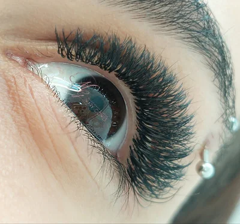
MÓDULO 01A profissão e a origem das extensõesdado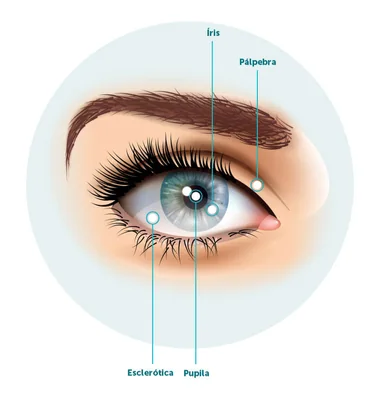
MÓDULO 02Anatomia do olho e tricologia dos cíliosdado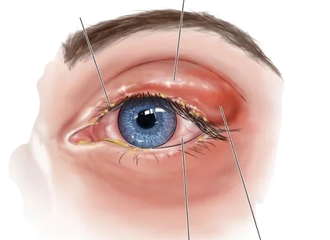
MÓDULO 03Saúde ocular e biossegurançadado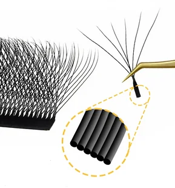
MÓDULO 04Fios, curvaturas, espessuras e comprimentosdado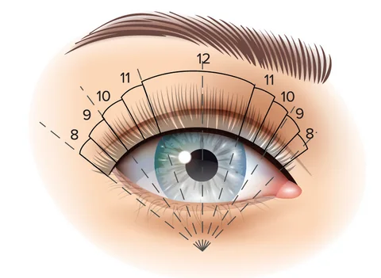
MÓDULO 05Mapping e direcionamentodado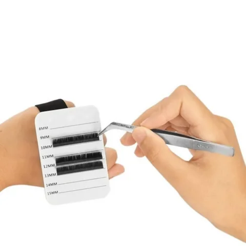
MÓDULO 06Materiais de trabalhodado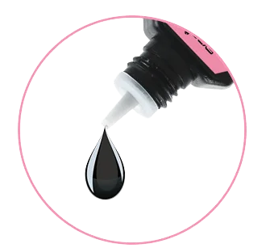
MÓDULO 07A química da retenção: pH e adesivodado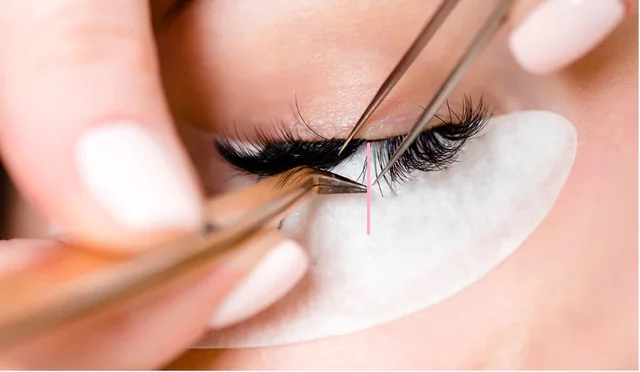
MÓDULO 08Técnica de aplicaçãodado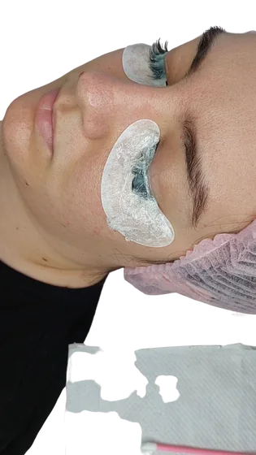
MÓDULO 09Manutenção, remoção e pós-procedimentoFerramentas da aula
Boas-vindas
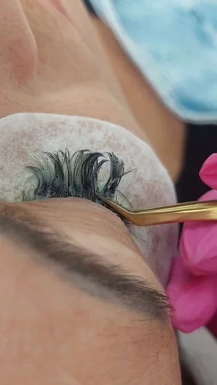
ao curso Lash Design, o seu ponto de partida no universo da extensão de cílios. Fico muito feliz por você ter escolhido dar os primeiros passos dessa profissão comigo.
Este curso foi pensado para quem está começando do zero. Nos próximos dois dias, vamos juntas entender por que cada etapa existe — da anatomia do olho à química do adesivo — e, principalmente, como fazer cada uma delas com segurança, na prática, com modelo e acompanhamento.
Esta apostila é a sua companheira de aula. Tudo o que eu explicar e demonstrar está organizado aqui, em linguagem simples, com fotos, tabelas e espaços para você anotar. Depois do curso, ela continua sendo o seu material de consulta sempre que bater uma dúvida no atendimento.
Lembre-se: ninguém nasce sabendo isolar um fio. A diferença entre a lash comum e a lash disputada está no treino, no cuidado com a cliente e na vontade de continuar aprendendo. Estou aqui para te guiar em cada passo.
Que esses dois dias sejam cheios de aprendizado, descobertas e, claro, beleza!
das extensões
Antes de pegar na pinça, vale entender o que é ser lash designer, o que o mercado espera de você e de onde veio essa técnica que hoje transforma o olhar de tantas mulheres.
Neste módulo você vai aprender
- O que é a extensão de cílios e por que ela cresce tanto
- O papel e as responsabilidades da lash designer
- Por que não existem atalhos nesta profissão
- Como surgiram os cílios postiços e o fio a fio
- A diferença entre cílio postiço e extensão
- Como explicar isso de forma simples à cliente
Está aprendendo a cuidar de um olhar.”
O que é a extensão de cílios
A extensão de cílios é a técnica de colar um fio sintético sobre cada fio natural da cliente, com um adesivo próprio para a região dos olhos.
O resultado são cílios mais longos, volumosos e curvados, sem precisar de rímel nem curvex. Bem feita, a extensão dura semanas, realça o formato dos olhos e eleva a autoestima — por isso é um dos serviços de beleza que mais crescem.
Mas existe um detalhe que separa um trabalho bonito de um trabalho perigoso: estamos aplicando um produto químico a milímetros dos olhos de uma pessoa. Cada escolha — o fio, o adesivo, a distância da pele, a higiene — tem um motivo. Esta apostila existe para te mostrar esses motivos.
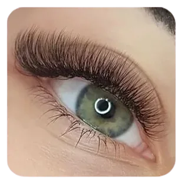
O que é uma lash designer?
É a profissional capacitada em técnicas de extensão de cílios que avalia, planeja e executa o alongamento de forma segura e personalizada. Ela entende de cílios, de saúde ocular e de visagismo (a harmonia entre os olhos e o rosto), e está sempre em busca do que há de mais atualizado no mercado.
Avalia
Observa a saúde dos olhos, a espessura e o tamanho dos fios naturais e o formato do olhar.
Planeja
Escolhe técnica, fio, curvatura, comprimento e o mapping ideal para aquela cliente.
Executa
Aplica com higiene, isolamento perfeito e distância segura da pele.
Orienta
Ensina os cuidados em casa e agenda a manutenção. Cliente bem orientada volta.
Para ter sucesso como lash, não pule etapas. Esteja disposta a estudar, treinar e investir na sua carreira. Não se prenda a um único curso: busque evolução constante. Ser detalhista é o que vai fazer de você um diferencial no mercado.
Qual dessas quatro etapas você acha que será o seu maior desafio? Por quê?
A origem das extensões de cílios
Dos cílios postiços do cinema à técnica fio a fio que conhecemos hoje.
Os cílios postiços chegam a Hollywood. O maquiador Max Factor — que trabalhou com maquiagem de teatro na Rússia antes de se mudar para os Estados Unidos e fundar a marca que leva o seu nome — cria cílios postiços para o cinema. A atriz Phyllis Haver está entre as primeiras a usá-los, e o olhar dramático vira desejo entre as estrelas.
As divas adotam os postiços. Os primeiros modelos estavam longe do ideal, mas conquistaram as atrizes da época. Sophia Loren, por exemplo, usou cílios postiços ao longo de toda a vida.
O fio a fio nasce no Japão. No início dos anos 2000, os japoneses criaram um cílio artificial que imitava a forma e a curvatura do natural — e passaram a colá-lo um a um sobre cada fio natural. A técnica virou febre por lá: o formato da pálpebra asiática deixa os cílios quase invisíveis, e a extensão resolvia isso.
A técnica ganha o mundo. A marca japonesa Shu Uemura chamou atenção ao criar cílios especiais para a cantora Madonna, e as extensões passaram a aparecer em tapetes vermelhos e capas de revista.
Infinitas possibilidades. Curvaturas, espessuras, tamanhos e materiais diferentes, fios tecnológicos e fans prontos (premade) permitem criar desde um efeito natural até o mega volume.
Cílio postiço × extensão fio a fio
| Cílio postiço | Extensão de cílios | |
|---|---|---|
| Onde é colado | Em uma tira, sobre a pálpebra | Fio por fio, sobre cada cílio natural |
| Adesivo | Cola de maquiagem, removível em casa | Adesivo à base de cianoacrilato, aplicado só por profissional |
| Duração | Um dia / uma ocasião | Semanas, com manutenção periódica |
| Resultado | Efeito montado, mais artificial | Personalizado para o olho e o fio de cada cliente |
“O postiço é uma tira que você cola e tira no mesmo dia. A extensão é diferente: eu colo um fio levinho em cada cílio seu, um por um, sem encostar na pele. Ele acompanha o crescimento do seu cílio natural, por isso dura semanas.”
tricologia dos cílios
Você vai trabalhar a milímetros dos olhos e sobre fios vivos, que nascem, crescem e caem. Conhecer essa estrutura é o que te permite escolher o material certo e evitar danos.
Neste módulo você vai aprender
- As partes do olho e por que cada uma importa
- Para que servem os cílios
- As três camadas do fio: cutícula, córtex e medula
- Do que o fio é feito e as ligações químicas
- O que são as glândulas de Meibômio
- O ciclo de crescimento e as baby lashes
não sobrecarrega o fio natural.”
Anatomia do olho e a importância dos cílios
Os olhos têm formato esférico e ficam protegidos pela cavidade óssea do crânio. As pálpebras dificultam a entrada de sujeira e as sobrancelhas impedem que o suor escorra para dentro dos olhos. Os cílios completam essa proteção.
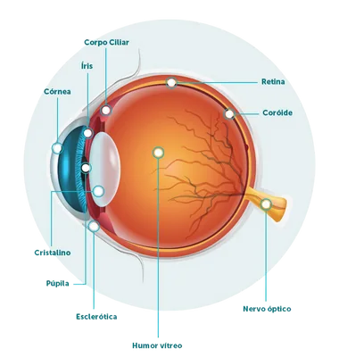
| Estrutura | O que é | Por que importa para a lash |
|---|---|---|
| Esclera | A parte branca do olho. Camada fibrosa que reveste o globo ocular; nela se prendem os músculos que movimentam o olho. | Vermelhidão na parte branca depois do atendimento é sinal de irritação (vapor do adesivo ou pad mal colocado). |
| Córnea | “Janela” transparente na frente do olho, ligada à esclera. Muito sensível: tem inúmeras terminações nervosas e direciona a luz para a retina. | É ela que se machuca quando o pad se mexe ou o olho fica entreaberto (abrasão da córnea). |
| Conjuntiva | Membrana fina que cobre a parte branca e o lado de dentro das pálpebras. Lubrifica e protege contra agentes externos. | É a membrana que inflama na conjuntivite — inclusive na conjuntivite tóxica causada pelo vapor do adesivo. |
| Íris | A parte colorida. Um músculo circular que controla o tamanho da pupila: relaxa na luz fraca (pupila aumenta) e contrai na luz forte (pupila diminui). | O início e o final da íris são pontos de referência do mapping. |
| Pupila | A abertura no centro da íris, que regula quanta luz entra no olho. | Marca o centro do olhar — referência para os mappings que abrem o olho. |
| Retina | Camada no fundo do olho que transforma a luz em sinais enviados ao cérebro pelo nervo óptico. | Não temos contato com ela, mas é por isso que a luz forte incomoda tanto. |
Durante todo o procedimento a cliente fica de olhos completamente fechados. O que tocamos é a pele da pálpebra e os cílios. Se a conjuntiva ou a córnea forem atingidas, algo deu errado: o pad saiu do lugar, o olho entreabriu ou o adesivo chegou perto demais.
Tricologia dos cílios
Os cílios existem para proteger os olhos. Eles funcionam como uma barreira que impede que poeira e microrganismos cheguem até o globo ocular, e também como um sensor: quando algo se aproxima, os cílios disparam o reflexo de piscar antes que o objeto atinja o olho. São parecidos com os fios de cabelo, porém mais curtos e finos — em geral, entre 0,10 e 0,15 mm de espessura.
As três camadas do fio
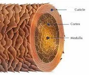
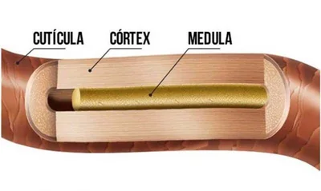
Cutícula camada externa
Formada por células em escamas sobrepostas, como telhas, ricas em queratina e enxofre. Protege o córtex e a medula e dá brilho e maciez ao fio. É a camada que abre levemente com produtos alcalinos — e isso ajuda o adesivo a aderir (Módulo 7).
Córtex camada do meio
O “coração” do fio e a camada principal. Concentra a maior quantidade de proteína (queratina) e é responsável pela hidratação interna, pela força e pela elasticidade. É também onde fica o pigmento.
Medula camada central
O miolo do fio, que dá sustentação à estrutura. É formada por células que já não contêm água no seu interior.
Do que o cílio é feito
A queratina é formada pela união de cinco elementos químicos:
As três ligações químicas
São as “pontes” que seguram a estrutura do fio. Entender cada uma explica por que o cílio muda de forma quando molha e por que o pH dos produtos faz tanta diferença.
| Ligação | Força | O que rompe | Na prática |
|---|---|---|---|
| Pontes de hidrogênio | As mais fracas e temporárias. Existem em maior quantidade. | Água | Ao molhar e secar os cílios, eles mudam de forma por um tempo. É o que acontece quando a cliente lava o rosto. |
| Pontes salinas | Intermediárias. Formadas pela atração entre cargas positivas e negativas. | Mudança de pH (produto ácido ou alcalino) | Voltam ao normal quando o pH do fio se estabiliza. É aqui que agem o shampoo e o primer. |
| Pontes dissulfeto (de enxofre) | As mais fortes. Definem a estrutura permanente: se o fio nasce liso, curvado ou crespo. | Só produtos químicos | Só são rompidas por química, como no lash lifting. A extensão não mexe nelas. |
A cor dos cílios
Quem dá cor aos fios é a melanina, que tem dois tipos: a eumelanina, responsável pelos tons escuros, e a feomelanina, responsável pelos tons avermelhados. A quantidade e a mistura das duas criam toda a variedade de cores. Pessoas albinas, que não produzem melanina, têm fios claros, amarelados.
Pele saudável, cílio saudável
Os cílios nascem da pele da pálpebra. Por isso, para ter bons resultados, é preciso olhar as duas coisas: a saúde da pele (vermelhidão, descamação, crostas) e a estrutura dos fios (espessura, força, quantidade).
Glândulas de Meibômio
São as glândulas sebáceas das pálpebras. Ficam na borda da pálpebra, junto à raiz dos cílios, e produzem o meibum, uma substância oleosa.
O meibum é uma das camadas da lágrima: ele mantém o olho lubrificado porque impede que a lágrima evapore rápido demais, além de proteger e nutrir a superfície do olho.
É por causa dessas glândulas que a linha dos cílios fica oleosa o tempo todo, mesmo depois de limpa. Oleosidade impede o adesivo de grudar — por isso repetimos o cleanser durante a aplicação.
- Água rompe as pontes de hidrogênio → o fio muda de forma por pouco tempo.
- pH rompe as pontes salinas → é assim que preparamos o fio para receber o adesivo.
- Química forte rompe as pontes dissulfeto → isso é lash lifting, não extensão.
Ciclo de crescimento dos fios
Cada cílio passa por três fases e, ao final, cai e é substituído por um novo. Como cada fio está numa fase diferente, a cliente sempre tem fios novos, fios adultos e fios prestes a cair — ao mesmo tempo.
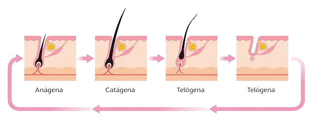
Anágena
Crescimento — dura de 30 a 45 dias. Os fios novos, chamados de baby lashes, são finos, curtos e, às vezes, mais claros.
Catágena
Transição — dura de 2 a 3 semanas. O fio para de crescer porque o folículo (a “raiz”) se contrai.
Telógena
Repouso — dura, em média, até 7 semanas. É a fase que antecede a queda. Quando o fio cai, a extensão cai junto.
Preserve as baby lashes. Fios em crescimento muitas vezes não aguentam o peso do fio sintético e podem se quebrar ou cair antes da hora. Quando a cliente voltar para a manutenção, eles já estarão prontos para receber extensão.
“É normal perder de 3 a 5 cílios por dia, usando extensão ou não. Quando o seu fio natural termina o ciclo, ele cai levando a extensão junto. Por isso existe a manutenção.”
biossegurança
Saber reconhecer quando não atender é tão importante quanto saber aplicar. Neste módulo você aprende a identificar as alterações mais comuns nos olhos e a montar uma rotina de higiene que protege você e a sua cliente.
Neste módulo você vai aprender
- Os tipos de conjuntivite e a ligação com o adesivo
- Blefarite e abrasão da córnea
- A diferença entre terçol e calázio
- O que é o ácaro Demodex e como orientar
- Contraindicações: quando não atender
- EPIs, limpeza e as 7 etapas da esterilização
Ela observa, protege e orienta.”
Conjuntivite
Os cílios vão além da estética: são uma barreira física contra microrganismos e partículas e funcionam como sensores que fazem a pálpebra fechar quando algo se aproxima. Por isso, a saúde dos olhos vem sempre antes da beleza.
A conjuntivite é a inflamação da conjuntiva, a membrana transparente que cobre a parte branca do olho e o lado de dentro das pálpebras. Costuma atingir os dois olhos e pode durar até 15 dias. As causas mais comuns são alergias, infecções (por vírus, bactérias ou fungos), corpo estranho e contato com produtos químicos.
| Tipo | Causa | Contagiosa? | Sinais | O que a lash faz |
|---|---|---|---|---|
| Alérgica | A mais comum. Pessoas com tendência a alergias (rinite, bronquite) reagem a pólen, poeira e pelos de animais. Piora no outono e na primavera. | Não | Coceira, vermelhidão nos dois olhos, lacrimejamento. Melhora e volta. | Não atende durante a crise. O tratamento (colírio antialérgico) é indicado pelo médico. |
| Infecciosa | Vírus, bactérias ou fungos. Passa pelo contato com a secreção de quem está doente. | Sim, muito | Bacteriana: secreção amarelada e espessa. Viral: secreção mais esbranquiçada. Um ou os dois olhos. | Não atende e encaminha ao oftalmologista. Reforça a higiene: lavar as mãos, não dividir toalhas, usar lenço descartável. |
| Tóxica | Contato com agente irritante: produtos de limpeza, tinta de cabelo, fumaça, poluição, sabonete, spray, cloro, maquiagem, colírios. | Não | Lacrimejamento e vermelhidão, que costumam sumir em 2 a 4 dias. | Previne: é o tipo ligado ao nosso trabalho (veja abaixo). |
Na extensão de cílios, a conjuntivite tóxica acontece por causa do vapor (fume) liberado pelo adesivo enquanto o cianoacrilato endurece. Para evitar: olhos da cliente totalmente fechados, adesivo sem excesso, ventilação e finalizador ao terminar.
A cliente chegou com o olho vermelho e coçando, e conta que tem rinite. O que você faz?
Blefarite
É a inflamação das bordas das pálpebras. Aparece como escamas espessas, crostas, pequenas feridas, vermelhidão e inchaço na linha dos cílios — tanto na pálpebra de cima quanto na de baixo.
Pode ser causada por infecção bacteriana ou por fungos, disfunção das glândulas de Meibômio, olho seco, ácaros Demodex, alergias e algumas doenças de pele. Pessoas com pele oleosa, caspa e olho seco têm mais chance de desenvolver.
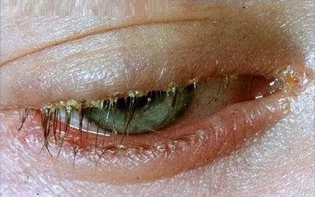
Viu crostas, escamas ou vermelhidão na raiz dos cílios? Não aplique. Explique com delicadeza o que observou e oriente a cliente a procurar um oftalmologista. A higienização diária dos cílios é a melhor prevenção — e é parte da orientação pós-procedimento.
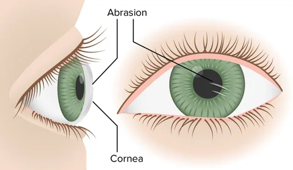
Abrasão da córnea
É um arranhão na superfície da córnea. Causa bastante desconforto: dor, vermelhidão, sensibilidade à luz (fotofobia) e a sensação de ter algo dentro do olho.
No dia a dia, costuma vir de poeira, uso errado de lentes de contato ou objetos que tocam o olho. Na extensão de cílios, a causa é o pad mal posicionado: quando ele se mexe, raspa no olho.
O tratamento depende da gravidade. Pequenas abrasões podem ser tratadas com colírios lubrificantes, mas só o profissional habilitado pode indicar o tratamento.
Durante o atendimento, confira se o pad não está machucando. Se a cliente lacrimejar, sentir ardência ou incômodo, pare na hora e verifique se o pad está na posição certa e se os olhos não estão entreabertos.
Terçol e calázio
São parecidos à primeira vista — os dois formam um “caroço” na pálpebra — mas têm causas diferentes e exigem cuidados diferentes.
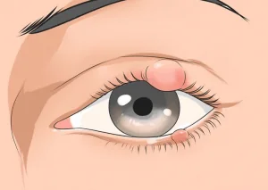
Terçol
Lesão com aspecto de bolinha vermelha na borda mais externa da pálpebra, perto dos cílios. É uma infecção causada por bactérias.
Sintomas: olho inchado, dor, vermelhidão e calor, coceira, lacrimejamento e sensibilidade à luz intensa.
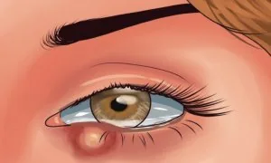
Calázio
Inflamação que aparece logo após a linha dos cílios, na pálpebra de cima ou de baixo. Não é infecção: acontece quando o canal de saída de uma glândula sebácea entope. É mais frequente em quem tem acne, seborreia ou rosácea.
Sintoma: inchaço avermelhado, parecido com um caroço — por isso muita gente confunde com terçol.
| Terçol | Calázio | |
|---|---|---|
| Origem | Infecção por bactérias | Inflamação por entupimento de glândula sebácea |
| Aspecto | Bolinha vermelha na borda, perto dos cílios | Caroço inchado e avermelhado na pálpebra |
| Sinais principais | Dor, calor, coceira, lacrimejamento | Inchaço localizado (edema) |
| Conduta da lash | Nos dois casos: não aplicar extensão e orientar a cliente a procurar o oftalmologista. Somente o médico faz o diagnóstico correto de qualquer problema ocular. | |
“Percebi uma alteração aqui na sua pálpebra. Para a sua segurança, prefiro não aplicar hoje. Passe no oftalmologista e, assim que estiver liberada, a gente remarca. Seu olho vem primeiro.”
Demodex, o ácaro dos cílios
Os ácaros são parentes das aranhas (aracnídeos) e estão entre os menores animais desse grupo — o Demodex só pode ser visto no microscópio. Mesmo invisível a olho nu, pode causar problemas sérios.
Duas espécies vivem nas pálpebras: o Demodex folliculorum, que fica na base dos cílios — é ele que acomete os cílios —, e o Demodex brevis, que vive nas glândulas de Meibômio. Por isso, o Demodex está ligado tanto à blefarite quanto à meibomite (inflamação dessas glândulas).
Eles têm corpo alongado, semitransparente, com oito perninhas curtas e escamas que os ajudam a se agarrar ao folículo. Alimentam-se de células da pele, hormônios e da gordura (sebo) que se acumula na raiz dos fios. Causam problemas principalmente quando falta higiene.
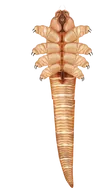
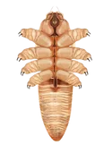
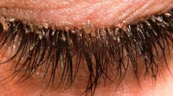
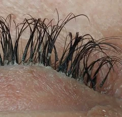
Sinais de Demodex
O que mais chama a atenção é a coceira intensa e as crostas na base dos cílios. Outros sinais:
- Olhos grudados e com secreção ao acordar
- Inchaço na pálpebra
- Vermelhidão na pálpebra e no olho
- Sensibilidade à luz
- Ardência
- Perda de cílios
- Olho seco
- Sensação de areia nos olhos
“A extensão não traz ácaro, mas cílio mal lavado acumula oleosidade e resíduos, que são o alimento dele. Lavar os cílios todos os dias com o shampoo certo mantém seus olhos saudáveis e a extensão durando mais.”
Contraindicações: quando não atender
A avaliação começa antes de deitar a cliente na maca. Use a ficha de anamnese (Anexos) em todo primeiro atendimento e atualize-a a cada retorno.
- Alergia ao cianoacrilato ou reação anterior a extensão de cílios.
- Doença ocular ou inflamação ativa: conjuntivite, blefarite, terçol, calázio, olho irritado.
- Crostas, feridas ou vermelhidão na linha dos cílios.
- Cirurgia nos olhos há menos de 3 meses.
- Gestantes e lactantes — peça a liberação médica por escrito.
Observe
Olhe a pele da pálpebra, a linha dos cílios e a parte branca do olho com boa luz antes de começar.
Pergunte
Alergias, cirurgias, uso de colírios, lentes de contato, gestação e reações em atendimentos anteriores.
Registre
Anote tudo na ficha e peça a assinatura da cliente. Isso protege as duas.
Nunca prescreva medicamento, nem colírio, nem pomada. Se a cliente apresentar qualquer alteração ou intercorrência, oriente-a a procurar um médico oftalmologista. Indicar remédio não é função da lash e pode agravar o quadro.
Liste três perguntas que você não pode deixar de fazer antes da primeira aplicação:
Biossegurança
Biossegurança é o conjunto de cuidados que previne doenças e riscos no ambiente de trabalho. O Brasil está entre os maiores mercados de beleza do mundo, segundo a Abihpec (Associação Brasileira da Indústria de Higiene Pessoal, Perfumaria e Cosméticos) — e quanto mais o mercado cresce, mais importante é redobrar os cuidados.
Profissional e cliente ficam expostas a microrganismos que causam doenças como hepatite B e C, herpes, gripe, tuberculose, micoses, conjuntivite e HIV, e também a produtos que liberam vapores e podem causar irritações e alergias — como o próprio adesivo.
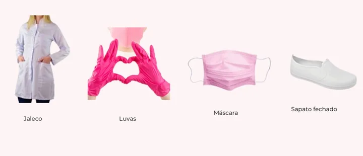
EPIs — Equipamentos de Proteção Individual
São de uso individual e, em geral, descartáveis: não devem ser reutilizados, nem com a mesma cliente.
Luvas
Em todos os procedimentos. Descarte ao final de cada atendimento.
Touca
Evita que microrganismos do seu cabelo passem para a cliente (contaminação cruzada).
Máscara
Descartável. Protege a sua boca e o seu nariz — inclusive dos vapores do adesivo.
Jaleco ou uniforme
Mantém você apresentável e protege a sua roupa de sujeira e produtos.
Sapato fechado
Se uma pinça ou outro material cair, seus pés estão protegidos.
Mãos limpas
Higienize as mãos antes de calçar as luvas e depois de retirá-las.
Conheça a legislação sanitária do seu município (Vigilância Sanitária). Seguir as boas práticas é o que garante, de forma ética, a sua saúde e a da sua cliente.
Limpeza, higienização e esterilização
A limpeza e a desinfecção do ambiente e dos materiais devem ser diárias. Cada palavra abaixo significa um nível diferente de cuidado.
Limpeza
Remove a sujeira visível — óleo, gordura, sangue, pus — com água, detergente e fricção (manual ou automática). Reduz os microrganismos e prepara o material para a desinfecção ou esterilização.
Higienização
Também chamada de sanitização. Conjunto de ações físicas e/ou químicas que reduzem a contaminação em superfícies como bancada, maca, equipamentos e utensílios.
Desinfecção
Elimina as formas ativas (vegetativas) dos microrganismos nas superfícies, com agentes químicos ou físicos — por exemplo, o álcool 70%.
Esterilização
Elimina todas as formas de vida microbiana: vírus, bactérias, fungos, protozoários e esporos. É o único processo que garante segurança total contra contaminação — é o que usamos nas pinças.
O fluxo da esterilização em 7 etapas
O material sempre anda em um sentido só (fluxo unidirecional): do sujo para o limpo, sem voltar.
- LimpezaLavar e escovar as pinças com detergente, usando luvas.
- Inspeção visualConferir se não sobrou resíduo de adesivo e se as pontas estão perfeitas.
- EmbalagemColocar em envelope próprio para esterilização, identificado.
- EsterilizaçãoNo equipamento (autoclave), seguindo as orientações do fabricante.
- MonitorizaçãoUsar os indicadores que comprovam que o ciclo funcionou.
- RegistrosAnotar data, ciclo e resultado de cada esterilização.
- ArmazenamentoGuardar em local limpo, seco e fechado até o uso.
Abra o envelope da pinça na frente da cliente. Ela vê que o material foi esterilizado só para ela — isso passa muita confiança.
Tenha um manual de rotinas escrito e padronizado, para nenhuma etapa ser esquecida, e use o EPI adequado em cada uma.
espessuras e comprimentos
Cada caixinha de cílios traz quatro informações: o tipo de fio, a curvatura, a espessura e o comprimento. Saber ler e combinar essas informações é o que transforma uma aplicação comum em um olhar personalizado.
Neste módulo você vai aprender
- O que é a técnica clássica e suas variações
- Do que são feitos os fios e a diferença entre eles
- Fios tecnológicos Y e W
- Fans premade: o que são e como aplicar
- Curvaturas tradicionais e criativas
- Como escolher espessura e comprimento
consegue sustentar.”
A técnica clássica fio a fio
A técnica clássica consiste em aplicar um fio sintético para cada fio natural que a cliente apresenta.
Ela é feita com um adesivo específico e serve para alongar, levantar, disfarçar falhas, realçar o olhar e dar volume aos cílios naturais. Em média, aplicamos de 100 a 160 fios por olho — um em cada fio natural que estiver apto a receber.
Os fios que vamos usar no curso
| Fio | Como é | Efeito |
|---|---|---|
| Fio a fio | Um fio único, com uma ponta | Natural, efeito “rímel”. A base de tudo. |
| Fio Y (volume brasileiro) | Uma base que se abre em pontas, como um Y | Mais volume que o fio a fio, com a mesma aplicação. |
| Fio W (volume egípcio) | Vários fios presos em uma única base, de 3D a 10D | Volume exuberante de forma rápida. |
| Fans premade | Leques prontos, de 3D a 24D | Efeito de volume russo e mega volume, sem montar fans. |
O que avaliar antes de escolher
No fio natural
- Espessura e força do fio
- Comprimento
- Direção em que ele cresce (reto, para cima, para baixo)
- Quantidade de fios e de camadas
No rosto (visagismo)
- Formato dos olhos
- Distância entre os olhos
- Sobrancelha
- Formato do rosto e o desejo da cliente
O tamanho, a curvatura e a espessura do fio sintético devem respeitar as características do fio natural de cada cliente. É assim que garantimos uma aplicação segura, sem sobrecarregar o fio natural.
Além da técnica clássica, você vai conhecer a técnica de capping, que entrega mais retenção e volume, com durabilidade acima de 30 dias, e a aplicação de fans premade, que permite oferecer volume de 3D a 16D no mesmo tempo de uma aplicação clássica.
Tipos de fios sintéticos
A diferença entre os fios está na composição e no processo de fabricação. A matéria-prima mais usada é o PBT (polibutileno tereftalato), um plástico da família do poliéster, parecido com o PET das garrafas. Ele resiste bem ao calor e a produtos químicos e mantém a forma — por isso a curvatura do fio não se desfaz.
“Sintético” quer dizer “feito artificialmente para imitar algo natural”, assim como o couro sintético imita o couro. A maioria das fábricas fica na Ásia, e a qualidade varia conforme o controle de produção de cada uma.
| Silk (seda) | Mink sintético | |
|---|---|---|
| Também chamado | — | Vison, Cashmere |
| Material | Em geral, PBT puro | Mistura de fibras sintéticas |
| Toque | Mais brilhante e maleável | Muito leve e macio — mais confortável |
| Brilho | Preto reluzente, parecido com plástico | Preto intenso, efeito matte |
| Curvatura | Segura menos: em dias quentes tende a relaxar | Mantém melhor |
| Uso | Menos comum hoje | O mais utilizado |
Base do fio: elipse × cônico
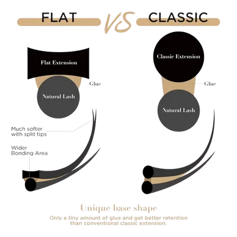
Fio elipse (flat)
Base achatada, que “abraça” uma área maior do fio natural. Tem uma bifurcação bem sutil na ponta. Por ter mais área de contato, a aderência é melhor e o fio fica mais leve.
Fio cônico (clássico)
Base redonda, mais difícil de acoplar. É o fio exigido em campeonatos de técnica clássica.
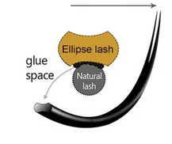
No fio elipse, o adesivo preenche o espaço entre a base achatada e o fio natural (glue space), aumentando a área colada.
Fios tecnológicos
Os fios tecnológicos são uma evolução das extensões: permitem que iniciantes entreguem muito mais volume, de forma rápida — algo que antes só era possível com segurança no volume russo ou no mega volume. São fabricados com Nano PBT, que deixa o fio muito mais leve. Nessa categoria estão o fio Y, o fio W e os fans premade.
Fio W e suas variações
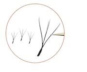
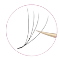
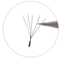
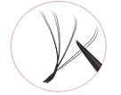
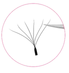
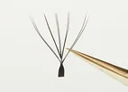
Vários fios presos em uma única base. Existem opções de 3D a 10D (D = quantidade de pontas). Dão um volume exuberante de maneira rápida e prática, e a aplicação segue o mesmo procedimento do fio a fio.
Fio Y e suas variações
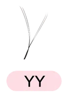
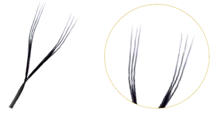
Uma base que se abre em pontas, como a letra Y. Existem duas variações no mercado (Y e YY), que mudam a quantidade de fios presos na base e de pontas — de 4 a 6 na versão YY. Dá mais volume que o fio a fio e é aplicado da mesma forma.
Quanto mais pontas, mais volume — mas a base fica mais grossa e o fio fica mais pesado. Avalie sempre a estrutura do fio natural da cliente para preservar a saúde dos cílios.
Pegue um fio W e um fio fio a fio da mesma espessura. Compare o peso e a base na pinça. O que muda na hora de escolher para uma cliente de fios finos?
Fans premade
São leques (fans) já montados, perfeitos e prontos para aplicar. Vendidos de 3D a 24D, em material coreano de excelente qualidade, leve e delicado. Como o fan já vem pronto, você aplica da mesma forma que os fios tecnológicos e entrega do volume russo ao mega volume.
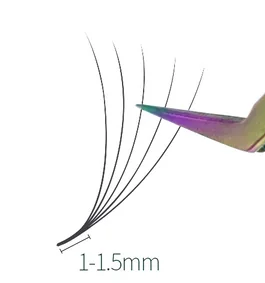
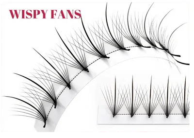
Mesmo com fans prontos, esta aplicação não é considerada técnica clássica: você está entregando um trabalho de volume russo ou mega volume (de 3D até 16D). Isso muda o preço do serviço e o cuidado com o peso sobre o fio natural.
Você encontra os fans soltos ou fixados em uma fita. Para tirar da fita sem desmontar, use uma pinça de boa precisão e pegue sempre pela base.
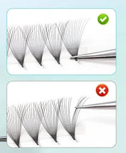
Certo × errado: ao pegar o fan pela base, ele sai inteiro e alinhado (em cima). Se você pegar pelo meio ou pelas pontas, o leque abre, desalinha ou se desmonta (embaixo).
Acoplagem e opções
A acoplagem do premade é feita da mesma maneira que a dos fios tecnológicos: a base do fan é posicionada sobre o fio natural isolado e mantida por alguns segundos até firmar.
Muitos fans já vêm com uma quantidade mínima de adesivo na base. Por isso, ao mergulhar, use pouco adesivo — o excesso pesa, gruda fios vizinhos e aumenta o risco de irritação.
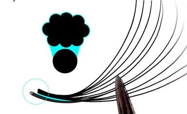
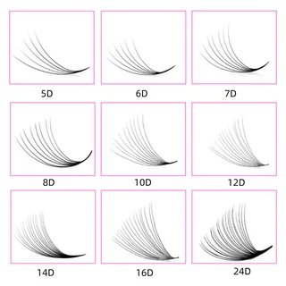
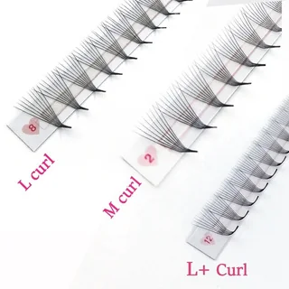
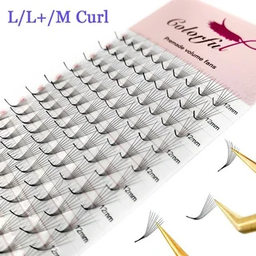
Aplicando o premade, passo a passo
- Isole o fio natural, como em qualquer técnica.
- Retire o fan da fita segurando pela base.
- Mergulhe só a base no adesivo, com pouca quantidade.
- Encoste a base no fio natural, respeitando a distância da pele.
- Segure alguns segundos, já na direção do mapping.
- Confira se a base ficou bem colada e o leque, aberto.
Comece pelos fans de menos pontas (3D a 6D) e espessura 0,05 ou 0,07. Eles são mais fáceis de acoplar e mais leves para o fio natural. Os volumes maiores ficam para quando a sua acoplagem estiver segura.
Curvaturas
Existe uma grande variedade de curvaturas. A escolha depende do efeito desejado, da direção natural dos cílios e do biótipo facial de cada cliente.
B, C, CC, D e DD
A curvatura começa logo na base e vai aumentando até a ponta. Das mais suaves (B) às mais acentuadas (D e DD). A C é a mais popular, porque fica bem na maioria das clientes; a D/DD é para quem gosta de um efeito ousado.
L, L+, LC, LD e M
São a tendência do momento. Têm a base reta e uma dobra mais marcada, que projeta o fio para frente e para cima. Estão no fio a fio, nos tecnológicos e nos premade, e criam efeitos como fox e seta. As mais usadas hoje são a L e a M.
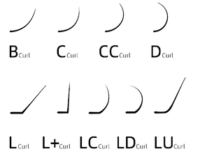
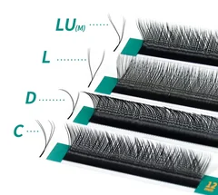
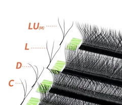
A mesma curvatura pode ter nomes diferentes entre marcas: algumas chamam a M de LU, como nas cartelas acima. Confira sempre o desenho na caixa.
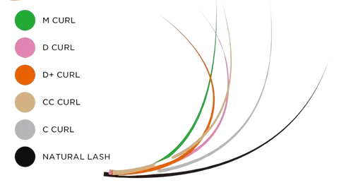
Para usar as curvaturas de forma correta, observe a direção em que os cílios naturais crescem. Cílio que já é curvado para cima pede curvatura suave; cílio reto ou voltado para baixo pede mais curvatura.
O efeito de cada curvatura
| Curva | Efeito no olhar | Indicada para |
|---|---|---|
| B | A mais natural. Reta na base, curva suave perto da ponta. | Cílios que já são voltados para cima e querem uma curvatura perceptível, mas natural. Também para olhos profundos. |
| C | Alonga o olhar, sem exagero. | A mais popular do mundo. Cílios retos ou levemente curvados. Funciona com qualquer estilo e mapping. |
| CC | Abre, arredonda e levanta o olhar. | Meio-termo entre a C e a D, para quem quer mais abertura sem drama. |
| D / DD | As curvas mais dramáticas. Levantam e abrem o olhar, projetando-o para trás. | Cílios naturalmente retos ou voltados para baixo, e clientes que querem um look ousado. |
| L | Base plana com dobra acentuada: a ponta aponta para frente. Eleva o canto externo. | Cílios retos ou para baixo. Ajuda a criar o olho de gato bem marcado. |
| L+ | Alongamento e olhar mais sensual. | Mappings que alongam. Evite no mapping boneca. |
| LC | Projeta o olhar para frente e alonga. | Efeitos alongados com abertura moderada. |
| M | Projeta o olhar para frente e para cima; olho de gato extremo. | Quase todas as clientes, principalmente cílios retos ou voltados para baixo. |
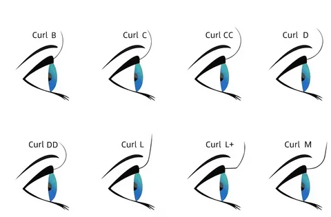
Se você deseja criar efeitos (boneca, esquilo, gatinho, fox), as curvaturas mais indicadas são:
B · C · CC · M · L
Espessura e comprimento
Diâmetro (espessura)
É a grossura de cada fio, medida em milímetros. Os fios sintéticos têm várias espessuras, e a escolha depende da técnica e da estrutura do fio natural. A regra é simples: o diâmetro da extensão deve ser o mais próximo possível do diâmetro do cílio natural.
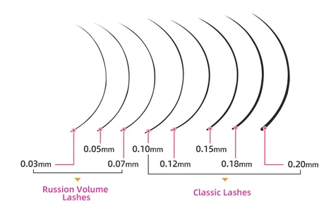
| Técnica | Espessuras mais usadas (mm) | Observação |
|---|---|---|
| Fio a fio | 0,10 · 0,12 · 0,15 · 0,18 · 0,20 · 0,25 | Quanto mais grosso, mais marcado — e mais pesado. |
| Fio tecnológico | 0,05 · 0,07 · 0,10 | Vários fios na mesma base: por isso são mais finos. |
| Volume russo | 0,05 · 0,07 | Fans montados com 2 a 7 fios para cada fio natural. |
| Mega volume | 0,03 · 0,05 | Muitos fios ultrafinos por leque. |
A diferença entre um fio 0,15 e um 0,20 parece pequena, mas a base do 0,20 é bem maior — e o peso também. Em fios naturais finos, prefira as espessuras menores.
Comprimento
É o tamanho de cada fio sintético, em milímetros. No Brasil, o mais comum é usar de 7 a 14 mm. Mas quem manda é o fio natural: avalie sempre o comprimento dele antes de escolher, para não sobrecarregá-lo.
A extensão não deve ultrapassar de 2 a 3 mm o comprimento do cílio natural. Fio grosso + fio longo = peso. Peso demais quebra o fio natural e faz a extensão cair antes da hora.
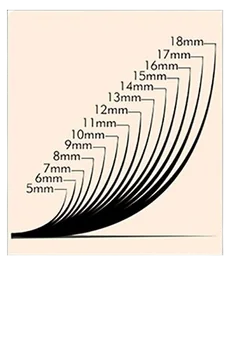
A cliente tem cílios finos, com 8 mm. Qual faixa de espessura e qual comprimento máximo você indicaria? Justifique.
direcionamento
O mapping é o “projeto” do olhar: define onde vai cada tamanho e cada curvatura. É ele que faz o trabalho parecer feito para aquela cliente — e não um modelo copiado.
Neste módulo você vai aprender
- O que é mapping e como marcar no pad
- Os pontos de referência do olho
- O que cada ponto (A, B, C e D) provoca
- As análises antes de escolher o mapping
- Mapping boneca, esquilo e gatinho
- Os ângulos do direcionamento dos fios
ela cria a sua assinatura artística.”
O que é mapping
Mapping (ou mapeamento) é o planejamento de quais tamanhos e curvaturas vão em cada parte do olho, para construir o efeito desejado.
Ele é totalmente personalizado: não existe um mapping que sirva para todo mundo. A técnica é ajustada às particularidades de cada cliente — formato dos olhos, do rosto, direção dos fios e preferências pessoais — para realçar as características naturais dela. Sem mapping, o trabalho não fica em harmonia, por mais caprichada que seja a aplicação.
Como marcar o mapping
- Com a cliente sentada e de olhos abertos, peça que ela olhe reto, para a frente.
- Marque na pálpebra os pontos de referência (caneta branca na pele).
- Com os olhos já fechados e o pad posicionado, transfira as marcações para o pad (caneta preta).
- Escreva no pad o tamanho e a curvatura de cada região.
Outra forma: dividir o olho em quadrantes iguais e traçar o mapping a partir deles.
Pontos de referência
- Canto interno — onde vai o primeiro fio.
- Canto externo natural — onde vai o último fio.
- Início e final da íris — limites da parte central.
- Pupila — o centro do olhar.
Marque sempre com o olho aberto. De olho fechado, a pálpebra muda de posição e o ponto “meio” sai do lugar.
Mantenha uma conversa constante: pergunte o que ela espera, mostre fotos de referência e avalie com honestidade se é possível entregar. “Esse efeito vai ficar lindo, mas com os seus fios eu indico uma versão um pouco mais leve, para não pesar e durar mais.” Esse diálogo é essencial para a satisfação final.
Em dupla, marque os pontos de referência no olho da colega e transfira para o pad. Anote aqui o que foi mais difícil:
O que cada ponto do olho provoca
Para entender o efeito de cada mapping, você precisa entender o que cada região do olho proporciona. Dominando esses pontos, você consegue indicar qualquer mapping com segurança.
A é o canto interno (perto do nariz), à direita; B é o canto externo, à esquerda. As linhas tracejadas marcam o início da íris (D1), o meio (C) e o final da íris (D2). Os mappings são combinações desses trechos.
Do A ao D1
Aproxima o olhar pelo direcionamento dos fios. Perfeito para olhos afastados.
Do B ao D2
Alonga, estreita e afasta o olhar. Perfeito para os efeitos gatinho, fox, delineado e sirena.
Do D1 ao D2
Abre o olhar. Camufla olhos profundos, pálpebras caídas e olhos pequenos. É a base do mapping boneca.
Do C ao D2
Levanta o olhar e camufla o caimento da pálpebra nessa região. É a base do mapping esquilo, o coringa.
escolher o mapping, o seu trabalho não vai se destacar.”
Análises e tipos de mapping
As 5 análises principais
- Formato dos olhosGrandes, pequenos, amendoados, redondos, asiáticos…
- PosicionamentoA distância entre os olhos: juntos ou separados.
- ProfundidadeSe o olho é mais para fora (proeminente) ou para dentro (profundo) da órbita.
- Linha horizontalSe o canto externo é mais alto (ascendente) ou mais baixo (descendente) que o interno.
- Altura dos olhos e das sobrancelhasQuanto de pálpebra aparece e se há caimento.
Boneca
Fios mais longos no centro do olho.
- Abrir o olhar
- Olhos separados
- Olhos pequenos
- Olhos caídos
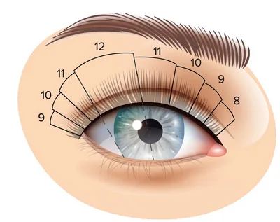
Esquilo
Fios mais longos entre o meio e o final da íris.
- Olhos juntos
- Pálpebras com caimento
- Levanta e alonga o olhar
- Coringa: fica bem em qualquer olho
Gatinho
Fios mais longos no canto externo.
- Estreitar e alongar o olhar
- Direcione os fios nos ângulos de 130° e 180°, a partir do meio do olho
Os números nas figuras são os comprimentos em milímetros. Repare que a diferença entre um trecho e outro é de 1 mm: transições suaves deixam o mapping natural, sem “degraus”.
Quando a lash consegue fazer o mapeamento correto, ela cria a sua assinatura artística: o mapping deve sempre entregar um trabalho que harmoniza o olhar.
Os efeitos do direcionamento
O mesmo fio, colado em ângulos diferentes, muda completamente o efeito. O direcionamento acompanha o mapping escolhido.
Abertura
Fios para cima. Abre e arredonda o olhar.
Elevação
Fios para cima e para fora. Levanta o canto externo.
Aproximação
Fios voltados para o canto interno. Aproxima olhos afastados.
Alongamento
Fios para fora, na horizontal. Alonga e estreita o olhar.
Os ângulos são medidos a partir da linha dos cílios, com o 0° apontando para o canto interno e o 180° para o canto externo. Na hora de colar, acople cada fio já na direção certa e segure alguns segundos até firmar — depois de seco, ele não muda mais.
Tipos de olhos e indicação de mapping
Observe cada tipo de olho e escreva qual mapping, curvatura e direcionamento você indicaria. Vamos corrigir juntas em sala.
| Tipo de olho | Mapping | Curvatura | Por quê? |
|---|---|---|---|
| Grandes | |||
| Pequenos | |||
| Asiáticos | |||
| Caídos | |||
| Separados | |||
| Juntos | |||
| Proeminentes | |||
| Profundos | |||
| Pálpebras caídas |
de trabalho
Cada item da bancada tem uma função. Conhecer para que serve cada um evita desperdício, ajuda na retenção e deixa o atendimento mais seguro e mais rápido.
Neste módulo você vai aprender
- Pinças retas e curvas
- Higrômetro, primer e cleanser
- Pads, micropore e nano mister
- Suportes para fios e para adesivo
- Descartáveis, removedor e finalizador
- A lista de compras completa
vira resultado.”
Pinças, higrômetro e primer
Pinça reta e pinça curva
A pinça reta faz o isolamento dos fios naturais. A pinça curva pega o fio sintético e faz a acoplagem. Existem vários modelos — com o tempo você descobre qual se encaixa melhor na sua mão.
Evite que as pinças caiam no chão: as pontas são finíssimas, entortam com facilidade e perdem a precisão. Pinça desalinhada não isola direito.
Higrômetro
Aparelho que mede a temperatura e a umidade do ambiente. É indispensável: só com ele você sabe se o seu adesivo vai funcionar como deveria e consegue controlar o ambiente para que as aplicações durem.
Deixe o higrômetro perto de onde você atende, para ter uma leitura precisa.
Primer e cleanser
Higienizam e preparam o fio natural para receber o adesivo. Removem a oleosidade natural, os resíduos de maquiagem e as sujidades que o shampoo não tirou. O primer também eleva o pH do fio natural, deixando a cutícula levemente aberta — o que torna a acoplagem mais rápida e eficaz.
Pad, micropore e nano mister
No centro: o pad deve acompanhar a linha dos cílios inferiores, sem invadir o olho (✓), e não pode ficar baixo ou torto (✗).
Pad (protetor de gel)
Tem formato anatômico e não solta fiapos — o tipo ideal e o mais confortável para a cliente. Protege a pálpebra inferior, ajuda a isolar os cílios de baixo, melhora a visão do campo de trabalho e protege a pele das pontas das pinças.
Fita micropore
Ajuda a isolar os fios inferiores com boa aderência e conforto. Também é usada para levantar a pálpebra e afastar o canto interno, facilitando a aplicação.
Cuide do posicionamento do pad e das fitas. Se a cliente começar a lacrimejar ou relatar incômodo ou ardência, pare o atendimento e verifique se o pad está na posição certa e se os olhos não estão entreabertos.
Nano mister
Acessório que acelera a cura do adesivo. Tem um compartimento de água que é liberada em nanopartículas: borrife com movimentos circulares e a uma boa distância do rosto.
Hoje existem produtos que substituem o nano mister, como os finalizadores, que fazem a cura do adesivo de forma rápida e mais controlada.
Suportes e acessórios
Suporte para os fios
Existe uma grande variedade: modelos para apoiar na bancada ou para prender na mão. Não há regra — escolha o que você mais se adaptar. Se optar pelo suporte de apoio, prefira os mais pesados: dão mais estabilidade e facilitam o trabalho.
Suporte para adesivo
Também há muitas opções: anéis, pétalas descartáveis, placas de cristal ou de pedra. Use o que você mais se adaptar e que conserve melhor o adesivo.
Quanto menos o adesivo fica exposto ao ar, melhor a fixação. Prefira recipientes com orifício: eles mantêm a gota protegida por mais tempo.
Microbrush
Descartável. Para aplicar removedor, primer e finalizador com precisão.
Caneta
Ponta fina. Preta para desenhar o mapping no pad; branca para marcar a pele.
Aplicador
Bastonete descartável de fibra sintética. Para higienizar os cílios antes da aplicação e aplicar removedor.
Limpeza, remoção e finalização
Escovinha descartável
Penteia as extensões durante o procedimento e ajuda a alinhar os fios. Uso individual e descartável.
Dica: ao final, dê a escovinha de presente para a cliente cuidar das extensões em casa.
Espuma de limpeza, shampoo e pump
A higienização da região dos olhos é o primeiro passo de qualquer procedimento. Comece removendo a maquiagem com água micelar — colocada no frasco pump, ela vira espuma e fica mais fácil de aplicar. Depois, use um shampoo específico para cílios, escolhido de acordo com o tipo de fio natural. A faixa de pH segura é de 7,1 a 7,5: assim ele remove as impurezas e deixa o fio levemente alcalino, pronto para o adesivo (Módulo 7).
Removedor
Remove as extensões. Existe em gel e em pasta (creme). Os de textura densa são mais confortáveis, porque não escorrem para os olhos.
Finalizador
Encapsula os vapores e acelera a cura do ponto de cola, deixando os olhos menos expostos — menos irritação e menos alergia. Ainda dá flexibilidade à ligação e aumenta a retenção.
Somente na ligação do adesivo com o fio natural, mantendo distância da pele e sem excesso. Vantagens: evita o choque de cura (shock cure), aumenta a retenção, funciona com todas as colas e reduz irritações.
Lista de materiais
Marque o que você já tem. Leve a lista quando for às compras.
Aplicação
- Caixas de cílios (fios)
- Adesivo
- Pinça reta
- Pinça curva
- Suporte (paleta) para os cílios
- Suporte para adesivo
- Gel pads
- Fita micropore
- Caneta preta e branca
- Removedor
Higiene e preparo
- Água micelar
- Shampoo para cílios
- Frasco pump
- Primer
- Cleanser
- Finalizador
- Microbrush
- Aplicadores descartáveis
- Escovinhas descartáveis
Estrutura e EPI
- Higrômetro
- Ventilador
- Maca
- Mocho
- Ring light
- Espelho de mão
- Luvas
- Toucas
- Máscaras
- Jaleco
Pesquise preço: comprar bem aumenta a sua margem de lucro. Sites como Shopee e AliExpress têm vendedores com ótimo custo-benefício para acessórios (pinças, paletas, pads, escovinhas).
Para adesivo, shampoo, primer, removedor e tudo o que vai perto dos olhos, prefira marcas com regularização na Anvisa e revendedores de confiança. Barato demais pode sair caro para os olhos da sua cliente.
pH e adesivo
Por que a extensão de uma lash dura quatro semanas e a de outra cai em cinco dias? A resposta quase sempre está aqui: no preparo do fio, no adesivo e no ambiente.
Neste módulo você vai aprender
- O que é retenção e de que ela depende
- pH: a régua que define a cutícula
- Como o adesivo endurece (polimerização)
- Composição, toxicidade e escolha do adesivo
- Temperatura, umidade e armazenamento
- Stickers, alergias e irritações
É preparo, produto e técnica.”
Retenção
Retenção é a capacidade de manter e prolongar a durabilidade das extensões de cílios.
Em geral, as extensões duram até cerca de 21 dias antes de começar a cair — seja pela troca natural das fases dos fios, seja pela falta de cuidados. Mas é possível ter uma durabilidade maior quando você domina a técnica, usa cada produto do jeito certo para cada cliente e trabalha com base no pH do fio natural.
Lembre que os cílios filtram impurezas o dia todo, por isso a boa durabilidade começa com uma higienização adequada. E, para o adesivo aderir de verdade, a cutícula do fio natural precisa estar levemente aberta (porosa). É aí que entra o pH.
A retenção depende de três princípios
Entender o pH
Saber como o pH abre ou fecha a cutícula do fio natural.
Escolher os produtos
Shampoo, primer, cleanser e adesivo certos para aquele fio e aquele ambiente.
Higienizar e preparar
Fio 100% limpo, sem óleo e sem resíduo, antes e durante a aplicação.
O que pode desequilibrar o pH dos cílios
| Causa | O que acontece |
|---|---|
| Características naturais da cliente | Cada pessoa tem diferenças na composição e no pH dos fios. |
| Problemas de saúde ou medicamentos | Condições médicas e tratamentos podem alterar o pH dos cílios. |
| Estilo de vida | Alimentação, hábitos de higiene e outros comportamentos influenciam o pH. |
| Produtos de preparo errados | Produtos de limpeza ou preparo que alteram o pH ou não são compatíveis com as extensões. |
Se as clientes voltam para a manutenção com poucas extensões, revise nesta ordem: higienização → pH dos produtos → adesivo e ambiente (temperatura e umidade) → acoplagem → orientações de cuidado que você deu.
O pH do fio natural
pH é a sigla de potencial hidrogeniônico. Ele indica a quantidade de íons de hidrogênio (H⁺) presentes em qualquer matéria — cabelo, pele, saliva, água… tudo tem pH. É medido em uma escala que funciona como uma régua de 0 a 14: quanto mais perto do 0, mais ácido; quanto mais perto do 14, mais básico (alcalino); e o 7 é neutro.
| Produto | Cutícula | Resultado na retenção |
|---|---|---|
| Ácido (0 a 6,9) | Fechada — fio brilhoso | O adesivo tem pouca área para “agarrar”. Retenção ruim. |
| Neutro (7,0) | Normal, sem porosidade | Não prejudica o fio, mas também não favorece a retenção. |
| Levemente alcalino (7,1 a 7,5) | Levemente aberta — fio opaco | A faixa ideal: fio levemente poroso, ótima aderência, sem danificar. |
| Muito alcalino (acima de 8) | Muito aberta — fio áspero | Fio fragilizado, que se desgasta com facilidade. Evite. |
Nossos olhos têm pH próximo de 7,0. Por isso o produto final precisa ser equilibrado: alcalino o suficiente para abrir a cutícula, mas não tanto a ponto de irritar os olhos.
O pH na prática
Um cílio saudável é levemente ácido: tem brilho, é forte e tem a cutícula fechada. Para a extensão aderir, precisamos deixá-lo levemente alcalino por um momento — e é exatamente isso que o shampoo e o primer fazem. Quanto mais alcalino o produto, mais aberta fica a cutícula e mais as substâncias penetram no fio. Por isso, o segredo é a medida certa.
Fio forte e brilhoso
Provavelmente está com o pH adequado. Siga o padrão: shampoo de pH 7,3 a 7,5.
Fio frágil, áspero, sem brilho
pH alcalino alto e cutícula sempre aberta: o fio se desgasta fácil. Use um shampoo de pH mais baixo, próximo de 7,1.
Fio grosso e oleoso
Pode precisar de mais alcalinização: shampoo de pH 7,5 (para não irritar os olhos) e primer de pH 8,0. Só nesse caso.
Avaliação individual
Cada cliente é única. Observe o fio antes de escolher os produtos — e anote na ficha o que funcionou.
Respeite a tabela de pH. Produtos que alcalinizam demais fragilizam e danificam os cílios. Trabalhando com shampoo de 7,1 a 7,5, você atende com segurança e com boa retenção.
O que acontece quando o pH está desequilibrado
| Problema | Consequência |
|---|---|
| A cola demora mais para secar | O atendimento fica mais longo |
| A cola escorrega no fio natural e não adere direito | Menor aderência das extensões |
| O desempenho da cola fica inconsistente | Retenção irregular, com queda antes da hora |
| Algumas clientes retêm bem e outras não, com o mesmo produto | Durabilidade varia de cliente para cliente |
| Em casos extremos, a cola não adere | Extensões se soltam muito cedo |
Leia o rótulo dos shampoos e primers da bancada. Qual é o pH de cada um? Para que tipo de fio você usaria?
Adesivo: como funciona
Este é o assunto que as iniciantes mais têm dificuldade de dominar, porque a durabilidade depende de vários fatores ao mesmo tempo. Existem muitas marcas no mercado — e, para escolher bem, você precisa entender como os adesivos funcionam.
Os adesivos para cílios são feitos de cianoacrilato, uma resina acrílica. Em contato com a umidade do ar, as moléculas começam a se ligar umas às outras, formando cadeias longas e fortes. Esse processo se chama polimerização, e é ele que faz a cola endurecer e prender a extensão ao fio natural.
Os três estágios
O tempo de ação de cada adesivo, informado pelo fabricante. É quando a cola “agarra” a extensão ao fio natural.
Logo após a acoplagem. É o momento de segurar e direcionar o fio para ele ficar alinhado e bem acoplado.
A cura do adesivo: o endurecimento completo, que leva em média 24 horas.
Um pouco de história
O químico Harry Coover, nos Estados Unidos, tentava criar um plástico transparente para miras de armas. O cianoacrilato grudava em tudo — e foi deixado de lado.
1951Pesquisando materiais para cabines de aviões a jato, Coover e Fred Joyner redescobrem a substância e percebem: era um adesivo instantâneo.
1958Chega ao mercado a primeira “super cola”. Depois, passa a ser testada na medicina para fechar ferimentos — mas a primeira versão, o metil-cianoacrilato, irritava e necrosava os tecidos.
HojeVersões de cadeia mais longa, mais suaves, são usadas na medicina e na formulação dos adesivos de cílios.
Composição dos adesivos
A composição varia conforme o fabricante, mas o cianoacrilato é sempre o principal ingrediente: de 80% a 90% da fórmula.
| Tipo de cianoacrilato | Características |
|---|---|
| Metil-cianoacrilato | Altamente tóxico. Uso proibido. |
| Etil-cianoacrilato | Secagem rápida e resistente. Cadeia curta: menos tóxico que o metil, mas mais irritante que os de cadeia longa. É a base da maioria dos adesivos. |
| Butil-cianoacrilato | Secagem intermediária. Cadeia mais longa, considerado de grau médico. |
| Alcoxi-cianoacrilato (metoxi, etoxi) | Cadeia longa, secagem e cura lentas, baixo odor e pouca emissão de vapores, baixa toxicidade. Mais sensível à umidade. |
As cadeias metoxi, etoxi e butil são consideradas de grau médico e diminuem o risco de irritações e alergias. Mas isso não torna a cola antialérgica: ela continua tendo cianoacrilato, que é um dos principais causadores de reações.
Outros componentes
- Estabilizantes: mantêm as moléculas afastadas para a cola não endurecer no frasco. São sensíveis à umidade.
- Espessantes (anidrido ftálico): funcionam como plastificantes.
- Hidroquinona: estabilizador que retarda a secagem.
- PMMA (polimetilmetacrilato): dá elasticidade e aumenta a resistência da cola.
- Carbon black: dá a cor preta ao adesivo e deixa a superfície mais áspera.
Exemplos de composições
| Nº | Componentes |
|---|---|
| 1 | Etil-cianoacrilato, etoxietil-cianoacrilato, PMMA, carbon black |
| 2 | Etil-cianoacrilato, alcoxi-2-cianoacrilato, PMMA |
| 3 | Etil-2-cianoacrilato, alcoxi-2-cianoacrilato, n-butil-2-cianoacrilato, PMMA, carbon black |
| 4 | Etil-2-cianoacrilato, PMMA, butil-2-cianoacrilato, alcoxi-2-cianoacrilato, carbon black |
Leia o rótulo do adesivo da aula prática: quais cianoacrilatos ele tem? Qual o tempo de secagem e a umidade indicada?
Toxicidade e escolha do adesivo
A toxicidade do adesivo está ligada à sua estrutura molecular: quanto mais curta a cadeia, maior o potencial tóxico. Todo adesivo libera vapores (o fume), que são o cianoacrilato evaporado. Em contato com olhos, nariz, garganta ou qualquer área úmida do corpo, esses vapores podem causar irritação, inchaço das pálpebras e ressecamento dos olhos e da garganta — e, em casos raros, crises de asma.
Como escolher um bom adesivo
- Prefira fórmulas com pelo menos dois tipos de cianoacrilato — elas são menos tóxicas.
- Escolha composições com cadeias de grau médico.
- Confira a temperatura e a umidade indicadas e compare com o seu ambiente.
- Escolha o tempo de secagem compatível com a sua agilidade.
Em aula eu mostro as composições que mais funcionaram para mim — mas não leve como regra. O importante é você saber o que um bom adesivo precisa ter.
Hora de trocar o adesivo
| Sinal | O que você nota |
|---|---|
| Textura | Muito viscoso ou pegajoso |
| Desempenho | Demora a fixar ou a retenção caiu |
| Aparência | Mesmo agitando, não fica fluido e homogêneo |
Siga sempre as recomendações do fabricante.
Medidas de segurança contra a toxicidade
- Use os EPIs (máscara, luvas)
- Mantenha o ambiente ventilado
- Controle temperatura e umidade
- Use a quantidade certa de cola
- Troque a gota com regularidade
- Use finalizador ao terminar
Existe adesivo antialérgico?
Não. Os componentes que fazem a cola aderir são os mesmos que podem causar alergia, e a sensibilidade muda muito de uma pessoa para outra. O que existe são adesivos de cadeia longa e grau médico, menos agressivos — por isso chamados de hipoalergênicos, e não antialérgicos.
“Não existe cola antialérgica no mercado. Eu uso um adesivo hipoalergênico, de grau médico, que reduz bastante o risco. Se você já teve alergia, fazemos um teste antes.”
Armazenamento, temperatura e umidade
- Guarde na embalagem original, de preferência dentro de um pote que possa ser lacrado.
- Mantenha longe de calor, umidade e luz do sol.
- Agite bem antes de cada uso e descarte a primeira gota.
- Troque a gota a cada 20 minutos, ou antes, se ela ficar viscosa.
- Limpe o bico para não entupir — nunca com algodão.
- A validade depois de aberto varia por fabricante: leia sempre as instruções.
O algodão reage com o cianoacrilato: a cola esquenta e solta fumaça irritante. Não use algodão para limpar o bico nem na região dos olhos.
A umidade é o “gatilho” da cura do adesivo. Com umidade alta, ele endurece mais rápido e exige agilidade — senão seca antes de acoplar e pode dar falsa colagem. Com umidade baixa, demora mais a curar, o atendimento fica longo e aumenta a chance de fios grudados (stickers).
| Umidade alta | Umidade baixa |
|---|---|
| Use adesivo de secagem mais lenta | Use adesivo de secagem rápida, para não atrasar o procedimento |
| Evite produtos de pH alto: aceleram a secagem | Aumente a umidade com um umidificador (se for pequeno, perto de você) |
| Agilize o processo de acoplagem | Evite microgotas: a umidade baixa deixa o adesivo mais líquido |
| Reduza umidade e temperatura com ar-condicionado ou desumidificador | Aumente a temperatura do ambiente e controle pelo higrômetro |
| Use um recipiente que deixe a gota menos exposta | Mantenha o ambiente ventilado |
| Trabalhe com microgotas (técnica microdrop) | Use menos adesivo para a secagem acontecer mais rápido |
Temperatura e umidade são decisivas, mas não são tudo: higiene, preparo do fio e acoplagem precisa completam a retenção.
Polimerização e cura
A polimerização e a cura começam juntas, no momento em que o fio sintético é acoplado ao natural. A partir daí o adesivo passa do estado líquido para o sólido, e a ligação vai ganhando força até atingir a resistência máxima, em cerca de 24 horas.
Quando estiver segura e dominando a técnica, você pode migrar para adesivos de secagem mais rápida. Hoje também existem produtos que fazem a cura logo após o procedimento, permitindo que a cliente molhe os cílios no mesmo dia.
Use só a quantidade necessária de adesivo. O excesso não aumenta a durabilidade: pesa, gruda fios vizinhos e aumenta o risco de irritação e de alergia.
Sticker
É quando uma extensão gruda na outra, ou quando uma extensão é colada em mais de um fio natural. É prejudicial: como os fios estão em fases diferentes, o sticker pode arrancar o fio natural.
Como evitar: adesivo com secagem adequada ao seu ritmo, umidade e temperatura controladas, isolamento perfeito e trabalho por camadas. Não aplique um fio colado ao lado do outro: alterne até preencher. No volume russo, invista em uma pinça de ótima precisão.
Alergias e irritações
A alergia é uma reação exagerada do sistema imunológico ao contato com uma substância (o alérgeno). Ela costuma aparecer quando o organismo está mais sensível ou com a imunidade baixa — e pode surgir no primeiro contato ou depois de anos usando o mesmo produto.
Embora sejam raras, as reações às extensões acontecem e geralmente estão ligadas ao cianoacrilato, presente em todos os adesivos. A reação pode vir do contato direto com a cola, apenas do vapor liberado durante o procedimento, ou de outros produtos usados. Pode aparecer durante a aplicação ou até 72 horas depois.
Queimadura química
Condição momentânea: os olhos ficam vermelhos e coçando pelo contato com o vapor do adesivo — geralmente porque ficaram semiabertos. Pode ter dor e a parte branca fica toda vermelha.
Processo alérgico
Costuma vir com inchaço (edema) das pálpebras — só nos olhos ou, nos casos graves, no rosto todo. Também: vermelhidão, coceira, lacrimejamento, ardência e sensibilidade à luz.
Como diminuir o risco
- Preencha a ficha de anamnese sempre
- Higienize corretamente olhos e cílios
- Respeite a distância da pálpebra
- Garanta os olhos totalmente fechados
- Evite conversas: ela pode abrir os olhos ou mexer o pad
- Histórico de alergia? Teste um dia antes
Não indique medicamento, colírio ou pomada. Oriente a cliente a procurar um médico especialista. Usar extensão há anos não impede que ela desenvolva alergia um dia — cada organismo reage de um jeito.
de aplicação
Chegou a hora da pinça. Isolamento, acoplagem, distanciamento e direcionamento são os quatro pilares de uma aplicação excelente — e cada um deles precisa ser feito com perfeição, fio por fio.
Neste módulo você vai aprender
- Como mergulhar o fio no adesivo
- Isolamento e acoplagem
- Distanciamento e direcionamento
- Camadas, transição de curvaturas e top line
- Preparo, higienização e microdrop
- O passo a passo completo da aplicação
E todo treino conta.”
A forma correta de mergulhar os fios
Ao levar o fio sintético ao adesivo, use só o necessário. Cola em excesso não aumenta a durabilidade: prejudica o acabamento, gruda fios vizinhos e aumenta o risco de complicações e de alergia.
✓ Certo: só a base do fio entra na gota, pela lateral.
✗ Errado: fio deitado sobre a gota ou afundado demais — leva cola por todo o comprimento.
Mergulhe cerca de 30% da base do fio.
Mergulhe até a bifurcação — o ponto onde o fio se abre.
A base reta precisa ficar em bom contato com o fio natural. Exigem um pouco mais de habilidade.
Ao tirar o fio da gota, observe: deve sobrar uma película fina e brilhante só na base, sem “bolinha” de cola. Se formou bolinha, encoste de leve na borda do recipiente antes de acoplar.
Isolamento e acoplagem
Isolamento
É essencial em qualquer técnica. Como cada fio natural está em uma fase diferente do ciclo, as extensões precisam ser aplicadas individualmente, com pouco adesivo, para não grudar nos fios vizinhos e não prejudicar o crescimento natural.
- Posicione a mão com a pinça de isolamento (reta ou curva) apoiada na testa da cliente, sem colocar peso.
- Isole da raiz para a ponta do fio natural, até ter visão total do fio separado.
- Se precisar, use a pinça de acoplagem, na outra mão, para ajudar a separar.
Acoplagem
É a aplicação do fio sintético sobre o fio natural já isolado. Pode ser feita por baixo, por cima ou de lado (a menos usada). Depois de posicionar, segure por alguns segundos e solte.
Por baixo
O sintético encosta na parte de baixo do natural. Ótima para dar curvatura e esconder a base.
Por cima
O sintético é apoiado sobre o natural. Ajuda a direcionar fios que crescem para baixo.
Confira se a base do fio sintético ficou bem acoplada. É isso que garante segurança, conforto e durabilidade.
Distanciamento e direcionamento
Distanciamento
A extensão deve ser colada a uma distância de 0,5 a 0,7 mm da pele, como margem de segurança. Algumas profissionais usam 0,3 mm nos cantos interno e externo. Se o adesivo encosta na pele, o risco de irritação e de alergia aumenta muito.
Manter sempre a mesma distância também deixa o alinhamento mais bonito e harmônico.
Direcionamento
Acople cada fio sintético já direcionado e alinhado, de acordo com o mapping que você quer construir (reveja os ângulos no Módulo 5).
Se o fio natural da cliente for torto, acople o sintético reto, sem acompanhar o natural. Assim o trabalho fica bem direcionado e o alinhamento, perfeito para o mapping.
Camadas e transição de curvaturas
Camadas
Os cílios se organizam em camadas — em média de 2 a 4, conforme a cliente. Dividir os fios em camadas agiliza a aplicação e é indispensável para os efeitos top line e perfect line. Mas a divisão precisa ser cuidadosa: feita do jeito errado, atrapalha, incomoda a cliente e pode deixar os olhos expostos.
- Corte uma fita micropore estreita, do comprimento do olho da cliente.
- Posicione a fita na pálpebra móvel, levantando todos os cílios.
- Com a pinça, solte delicadamente a primeira camada (a de baixo).
- Aplique nessa camada. Ao preencher, solte a próxima e repita.
Transição de curvaturas
É a técnica de passar de uma curvatura para outra de forma suave, sem degraus. É ela que garante o alinhamento perfeito do top line e do perfect line. As setas mostram as transições possíveis a partir de cada curvatura:
Na linha de cima ficam as curvaturas tradicionais, da mais suave (J) à mais acentuada (DD). Para baixo, as criativas de base reta equivalentes (L, LC, LD). Para cima, as que projetam ainda mais (M, L+ e LU).
Top line e perfect line
Dois efeitos que deixam as pontas dos fios alinhadas, formando uma linha limpa, sem degraus. Os dois exigem trabalhar com no mínimo 2 camadas, diminuindo o tamanho na camada de cima.
Top line
Transição de tamanhos por camada, mantendo a mesma curvatura: camada de baixo com 11 mm, do meio com 10 mm e de cima com 9 mm.
Perfect line
Transição de tamanhos por camada e troca de curvatura: quanto mais baixa a camada, mais curvado o fio, para a ponta subir até a mesma linha.
| Camada | Tamanho | O que ela define |
|---|---|---|
| Superior | 9 mm | O alinhamento — é a linha que todas as pontas devem alcançar |
| Do meio | 10 mm | A densidade — o preenchimento do olhar |
| Inferior | 11 mm | O tamanho — o comprimento final do efeito |
Os números acima são um exemplo: ajuste os tamanhos ao mapping de cada cliente, mantendo a lógica de diminuir 1 mm a cada camada para cima. Faça um bom preenchimento e capriche no acabamento — é ele que aparece na foto.
Monte no seu pad de treino um top line com três camadas e depois um perfect line. Qual ficou mais alinhado? O que você ajustaria?
Preparação e avaliação
Antes de iniciar, preencha a ficha de avaliação (anamnese) e entenda o que a cliente busca. Analise o fio natural para fazer um procedimento seguro.
Para que as extensões durem, os cílios naturais precisam estar 100% limpos. Qualquer resíduo ou oleosidade cria uma barreira entre o adesivo e o fio, o que pode causar falsa colagem ou uma retenção curta. Higienize sempre os cílios e a região dos olhos antes de qualquer aplicação e enxágue em abundância para tirar todo o resíduo de produto.
A correta higienização evita inflamações e blefarite. Depois de colocar a extensão, toda cliente precisa higienizar os cílios diariamente — explique isso já no primeiro atendimento.
Como controlar os fatores externos
- Mantenha a sala arejada, para renovar o oxigênio
- Trabalhe com adesivos de média secagem
- Umidade entre 40% e 65%
- Temperatura entre 20 °C e 24 °C
- Regule e confira o higrômetro
- Guarde o adesivo em pacote hermético
- Umidade baixa? Use umidificador
- Umidade alta? Use a técnica microdrop
Técnica microdrop
Consiste em mergulhar o fio sintético no adesivo deixando apenas uma pequena quantidade de cola. Na hora de acoplar, faça um leve movimento de zigue-zague sobre o fio natural para espalhar o adesivo.
É muito útil em dias de umidade alta, porque facilita a acoplagem e evita colagens falsas.
Passo a passo para o sucesso na retenção
A retenção nasce de três princípios: entender o pH do fio natural, escolher os produtos certos e fazer a higienização e o preparo corretos. Veja como isso fica na prática.
- Pré-limpeza com água micelarColoque a água micelar no pump, faça a espuma e limpe a região. Enxágue muito bem para remover a maquiagem. Isso ainda não é suficiente para preparar o fio: falta ajustar o pH.
- Shampoo específico para cíliosCom microbrush ou aplicador, faça movimentos de fricção nos fios e na linha dos cílios — a área com mais sujeira, por causa das glândulas sebáceas. Faça duas vezes e enxágue bem.
- CleanserRemove a oleosidade dos fios naturais. Aplique em todos os cílios com um palito e um aplicador (ou dois aplicadores), sempre com movimentos de fricção.
Em todo o processo de higienização e preparo, use água filtrada ou mineral.
Repita o cleanser de 2 a 3 vezes durante a aplicação, nos cílios que ainda vão receber extensão. O rosto continua produzindo oleosidade o tempo todo pelas glândulas sebáceas.
Essa higienização abre levemente a cutícula do fio natural. Somada ao adesivo certo e a uma acoplagem correta, ela garante uma excelente retenção.
Limpe também o chicote das extensões (a fita onde ficam os fios sintéticos) com álcool 70% ou cleanser, para a higienização ficar completa. Agora é só iniciar a aplicação!
Passo a passo da aplicação
Use este roteiro nos seus primeiros atendimentos até ele virar automático.
- AvaliaçãoPreencha a ficha de anamnese e marque os pontos do mapping com a cliente sentada, de olhos abertos.
- Separe os fiosEscolha pelo menos quatro tamanhos diferentes para montar o mapping.
- MãosHigienize as mãos e calce as luvas.
- LimpezaCom pincel delicado e descartável, limpe olhos e região com água micelar. Depois, shampoo específico duas vezes. Enxágue no mínimo duas vezes.
- PreparoAplique o preparador de sua preferência (primer/cleanser).
- PadsPosicione os pads nos cílios inferiores, sem invadir o olho, e isole os fios de baixo com micropore.
- MappingTransfira as marcações do mapping para o pad.
- PálpebraCom micropore, tracione levemente a pálpebra para facilitar o isolamento. O olho deve estar totalmente fechado e confortável.
- AdesivoAgite bem, descarte a primeira gota e coloque uma gota no recipiente.
- Mãos em posiçãoUma mão com a pinça de isolamento, a outra com a pinça que pega os fios.
- AplicaçãoIsole, mergulhe o fio no adesivo, posicione sobre o fio natural e segure alguns segundos na direção desejada.
- PreenchimentoRepita até completar todo o mapping, alternando as regiões.
- RetiradaRetire com delicadeza as fitas e os pads.
- FinalizaçãoAplique o finalizador e use um ventilador para dispersar o vapor. Só então peça para a cliente abrir os olhos.
- ConferênciaVerifique se todos os fios estão bem acoplados e sem stickers.
- OrientaçãoEntregue o cartão de cuidados e confirme que ela entendeu.
- AgendamentoJá deixe marcada a próxima manutenção.
Em média, o procedimento completo leva cerca de 2h30. No começo é normal levar mais tempo — a velocidade vem com o treino, a segurança vem primeiro.
13 cuidados para minimizar os riscos
Durante o procedimento podem acontecer intercorrências: sensibilidade, irritação ou até processos alérgicos. Elas podem estar ligadas desde a assepsia até os produtos usados. O adesivo é mais nocivo enquanto está líquido; depois de polimerizado, fica bem menos agressivo. Como cada organismo reage de um jeito, todo cuidado conta.
- Higienize corretamente as mãos e calce luvas descartáveis.
- Higienize bem os olhos e a região ao redor.
- Não coloque o pad perto da parte interna do olho (dentro da linha d’água).
- Use produtos de qualidade.
- Use fita hipoalergênica para isolar os cílios inferiores e, nos superiores, para melhorar a visibilidade.
- Mantenha o distanciamento adequado da pele.
- Use a quantidade certa de adesivo, sem excesso.
- Não deixe os olhos da cliente abertos durante o procedimento.
- Evite conversas. Ofereça um ambiente aconchegante para ela relaxar e descansar.
- Acople os fios corretamente.
- Não use algodão na região dos olhos.
- Use o finalizador: ele acelera a cura e diminui o risco de irritação e alergia.
- Preencha a ficha de anamnese e, se houver histórico de alergia, faça o teste um dia antes.
“Durante todo o procedimento, mantenha os olhos fechados e aproveite para relaxar. Se sentir ardência, coceira ou qualquer incômodo, levante a mão que eu paro na hora.”
Usar extensão há anos não garante que a cliente não vá desenvolver alergia. Cada organismo tem sua tolerância.
Se a cliente precisar de medicamento, oriente a procurar um especialista para avaliar.
e pós-procedimento
O atendimento não termina quando a cliente abre os olhos. A manutenção bem feita e as orientações certas são o que fazem a cliente voltar — e indicar você.
Neste módulo você vai aprender
- Quando e como fazer a manutenção
- A regra dos 50% para cobrar manutenção
- Remoção mecânica e remoção química
- Como remover todas as extensões
- Os cuidados que a cliente precisa ter em casa
- O cartão de cuidados para entregar
Cliente que volta indica.”
Manutenção
Em geral, o ciclo da extensão é uma aplicação seguida de 2 a 3 manutenções. Com o crescimento dos fios naturais, o mapping vai se perdendo, e os resíduos de adesivo se acumulam — por isso, depois de algumas manutenções, é preciso uma limpeza mais profunda e uma nova aplicação.
1 · Higienize
Do mesmo jeito que na primeira aplicação.
2 · Remova
As extensões presas em fios que cresceram e se afastaram da raiz.
3 · Reaplique
Nos fios que caíram, nos que trocaram de fase e nos que você removeu.
Para ser cobrada como manutenção, a cliente precisa voltar com no mínimo 50% das extensões. Abaixo disso, cobre como um novo procedimento.
Reforce as orientações de cuidado e revise o seu processo: higienização, pH dos produtos, adesivo e ambiente, acoplagem. Algum passo pode estar falhando.
Duas formas de remover os fios crescidos
Remoção mecânica
Feita com duas pinças: uma segura o fio natural e a outra retira o fio sintético, como se estivesse descascando uma banana.
Remoção química
Cole uma fita dupla face na pálpebra móvel e prenda nela os fios a remover. Com microbrush, aplique o removedor só na ligação com a extensão, deixe agir e retire.
Na remoção mecânica, cuidado para não danificar o fio natural. Evite fazer mais de 3 manutenções mecânicas seguidas: mesmo com todo o cuidado, a longo prazo o fio natural fica fragilizado.
Depois de remover, é só higienizar e fazer a manutenção. E já deixe a próxima agendada antes de a cliente ir embora: isso fideliza e evita que ela esqueça de marcar.
Remoção
Quando a cliente quer tirar as extensões ou quando é hora de uma nova aplicação completa.
Aplique o removedor
Com o pad e o micropore posicionados, aplique o removedor com microbrush sobre a base das extensões, sem excesso e longe dos olhos.
Deixe agir
Respeite o tempo indicado pelo fabricante. Removedor em gel ou pasta é mais confortável, porque não escorre.
Faça a varredura com pinça
Deslize a pinça da base para as pontas, “varrendo” as extensões que se soltaram, sem puxar o fio natural.
Limpe o que sobrar com microbrush ou aplicador descartável e confira se não ficou nenhum resíduo: em contato com água ou shampoo, ele cristaliza e atrapalha a retenção da próxima aplicação. Depois, lave com shampoo duas vezes. Se quiser, já pode fazer uma nova aplicação.
Orientações pós-procedimento
Explique cada item com calma no fim do atendimento. Abaixo, um cartão pronto para recortar ou reproduzir e entregar à cliente.
- Não molhar as extensões por até 24 horas, se não foi usado finalizador ou se o adesivo não tem essa tecnologia.
- Higienizar os cílios todos os dias.
- Não esfregar nem puxar as extensões.
- Secar os olhos com cuidado, só pressionando a toalha.
- Pentear as extensões com delicadeza.
- Não usar demaquilante oleoso ou bifásico na área dos olhos.
- Não usar rímel nem curvex.
- Evitar dormir em posição que amasse os cílios.
- Evitar banhos muito quentes e sauna.
- Depois de chorar, suar ou mergulhar no mar ou na piscina, lavar os cílios com água limpa.
“As primeiras 24 horas são as mais importantes: é quando a cola termina de curar. E lembre: cílio limpo dura mais. Lave todos os dias com o shampoo próprio e penteie com a escovinha.”
seus cílios
- Lave os cílios todos os dias com shampoo próprio
- Não molhe por 24 h (se orientado)
- Não esfregue, não puxe
- Seque pressionando a toalha
- Penteie com a escovinha
- Nada de rímel, curvex ou demaquilante oleoso
- Evite dormir de bruços, sauna e banho muito quente
- Chorou, suou ou mergulhou? Lave com água limpa
Revisão geral
Toque na alternativa. A resposta certa aparece em verde na hora.
Glossário
Acoplagem — colar o fio sintético sobre o fio natural isolado.
Adesão — primeiro estágio da cola, quando ela “agarra” a extensão ao fio.
Anágena — fase de crescimento do fio; é a fase das baby lashes.
Anamnese — entrevista e ficha de saúde feitas antes do atendimento.
Baby lash — fio novo, fino e curto, que ainda não aguenta peso.
Bifurcação — ponto em que um fio tecnológico se abre em pontas.
Camadas — “andares” de fios naturais, em média de 2 a 4.
Chicote — a fita onde ficam presos os fios sintéticos na caixa.
Cianoacrilato — substância principal do adesivo de cílios.
Cleanser — produto que remove a oleosidade do fio natural.
Coesão — momento logo após acoplar, em que seguramos e direcionamos o fio.
Cura — endurecimento completo do adesivo, em cerca de 24 h.
Cutícula — camada externa do fio, em escamas.
D (3D, 5D…) — quantidade de pontas de um fio ou de um fan.
Diâmetro — espessura do fio, em milímetros.
Distanciamento — espaço entre a pele e o início da extensão (0,5 a 0,7 mm).
EPI — equipamento de proteção individual: luvas, touca, máscara.
Fan — leque de vários fios finos presos em uma base.
Falsa colagem — quando parece colado, mas a cola não aderiu de verdade.
Finalizador — produto que acelera a cura e encapsula os vapores.
Fume — vapor liberado pelo adesivo enquanto endurece.
Higrômetro — aparelho que mede temperatura e umidade.
Hipoalergênico — com menor potencial de alergia (não é antialérgico).
Isolamento — separar um único fio natural para receber a extensão.
Mapping — plano de tamanhos e curvaturas para cada região do olho.
Microdrop — técnica de usar uma gota mínima de adesivo, em zigue-zague.
Pad — protetor de gel que cobre os cílios inferiores.
Perfect line — alinhamento das pontas trocando tamanho e curvatura por camada.
pH — escala de 0 a 14 que mede se algo é ácido, neutro ou alcalino.
Polimerização — transformação da cola de líquida (monômero) em sólida (polímero).
Premade — fan que já vem montado de fábrica.
Primer — preparador que limpa e deixa o fio levemente alcalino.
Retenção — quanto tempo as extensões ficam bem presas.
Shock cure — choque de cura: quando a cola seca rápido demais e fica quebradiça.
Sticker — fios grudados uns nos outros; pode arrancar o fio natural.
Telógena — fase de repouso, antes de o fio cair.
Top line — alinhamento das pontas trocando só o tamanho por camada.
Visagismo — harmonia entre o olhar e as características do rosto.
Wispy — efeito com pontas mais longas que se destacam, como espinhos.
Nenhum termo encontrado.